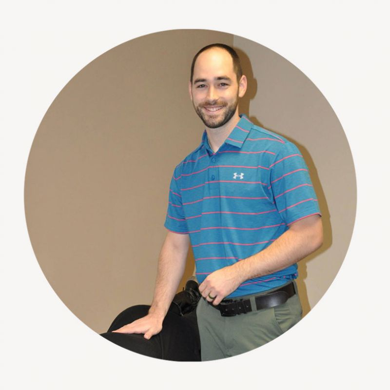

Chiropractic Adjustments
Gentle, specific adjustments by hand or instrument, matched to each person.
Learn more →Pursue Health • Live Life Aligned
From newborns to grandparents, Dr. Josh Nannen helps East Texas families move, feel, and function better, with care matched to each person instead of a one-size-fits-all routine.
Webster Certified · ICPA Member · Serving East Texas Families
What we do
Gentle, specific adjustments by hand or instrument, matched to each person.
Learn more →Targeted muscle work that helps adjustments hold longer and recovery come faster.
Learn more →Gentle care for every trimester, and for kids from their very first days.
Learn more →Why Essential Living
Every new patient starts with a real evaluation of the spine and nervous system, not a quick crack and a wave out the door. Dr. Josh matches the technique to the person, from traditional hands-on adjusting to gentle instrument work.
The office is built for families. Kids are welcome, the pace is unhurried, and you will always understand what is happening and why. We value God and family, and strive to have integrity in all we do.
Photo placeholder · TODO-PHOTO: office or family shot, roughly 4:3
From our patients
[Review pending approval. Paste a verbatim Google review here.]
[Review pending approval. Paste a verbatim Google review here.]
[Review pending approval. Paste a verbatim Google review here.]

Meet the doctor
Dr. Josh came to chiropractic through a love of serving people and a fascination with how the body works. He earned his Doctor of Chiropractic at Parker University in Dallas, and he and his wife Nicole, a Tyler native, are raising their four kids right here in East Texas.
Send us a request and we’ll call to find a time, or just call us now.